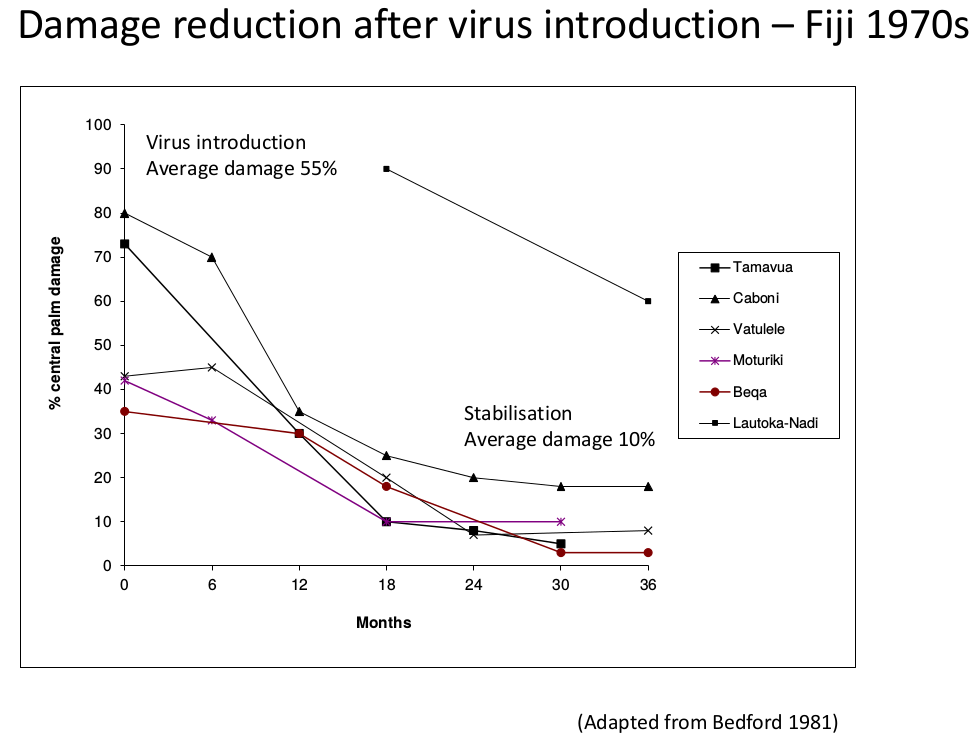
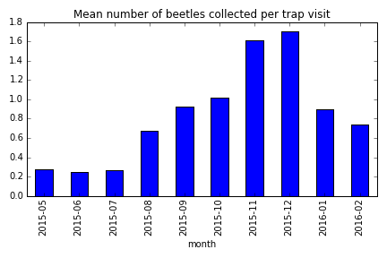

Update on the Guam Coconut Rhinoceros Beetle Situation for the Guam Invasive Species Council
Aubrey Moore
November 20, 2015 (Revised March 5, 2016)
Basic Biology
Grubs feed on decaying vegetation and do no damage.
Adults damage and sometimes kill palms when they bore into crowns to feed on sap.
Positive Feedback Cycle
A population explosion can occur when large numbers of adults kill palms which become breeding sites which generate even larger numbers of adults.
CRB on Guam
First detected in Tumon, September, 2007
Eradication attempt based on mass trapping and sanitation failed
CRB spread island-wide by 2010
Attempts at biological control using Oryctes nudivirus (OrNV) failed
Oryctes Nudivirus
a naturally occurring virus which attacks only rhino beetles
discovered in Malaysia during the 1960's
quickly became the preferred biological control agent for managing CRB on Pacific islands
prevents population explosions
is persistent once introduced into a CRB population
Oryctes Nudivirus

OrNV reduced damage by up to 90% when introduced into Pacific island CRB populations and population suppression was persistent.
CRB Attacking Guam is a Novel Biotype (CRB-Guam)
genetically different
resistant to all available isolates of OrNV
more invasive
CRB-Guam is Genetically Different
CRB-Guam is More Invasive
Following 30 years without range expansion, CRB has recently invaded Guam, Oahu (Hawaii), Guadalcanal (Solomon Islands), and Port Morseby (PNG). All new invasions involve CRB-Guam.
Discovery of the CRB-Guam Biotype
Marshall, Sean, Maclean Vaqalo, Aubrey Moore, Roland Quitugua, and Trevor Jackson (2015). A new invasive biotype of the coconut rhinoceros beetle (Oryctes rhinoceros) has escaped from biological control by Oryctes rhinoceros nudivirus. Presented at the International Congress on Invertebrate Pathology and Microbial Control and the 48th Annual Meeting of the Society for Invertebrate Pathology, Vancouver, BC, August 2015. Available on-line at http://www.sipmeeting.org/van1/SIP2015-Full%20Program.pdf
A CRB population explosion triggered by Typhoon Dolphin was predicted in the following press release.
Anonymous. Pacific Island Entomologists are Worried About a New Type of Coconut Rhinoceros Beetle Discovered on Guam. University of Guam, College of Natural and Applied Sciences Press Release, September 2, 2015. http://guaminsects.net/anr/sites/default/files/CRBpressRelease.pdf
Recent Changes on Guam

Recent trapping data indicate that a CRB population explosion was initiated by Typhoon Dolphin which visited Guam in May 2015, leaving many new breeding sites in its wake.